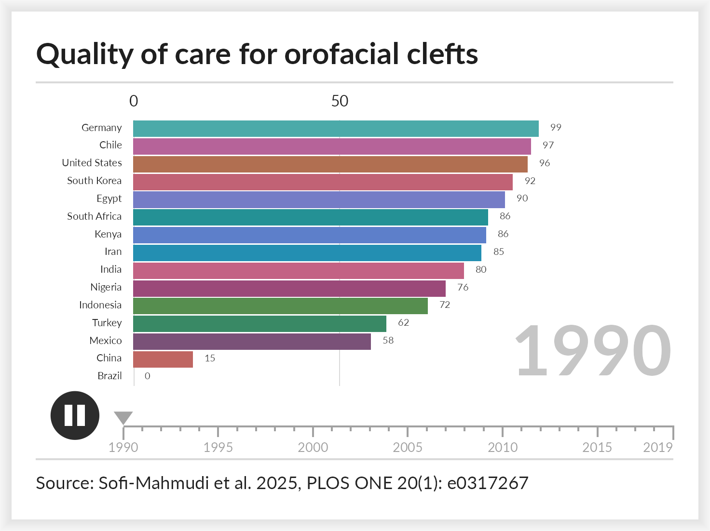
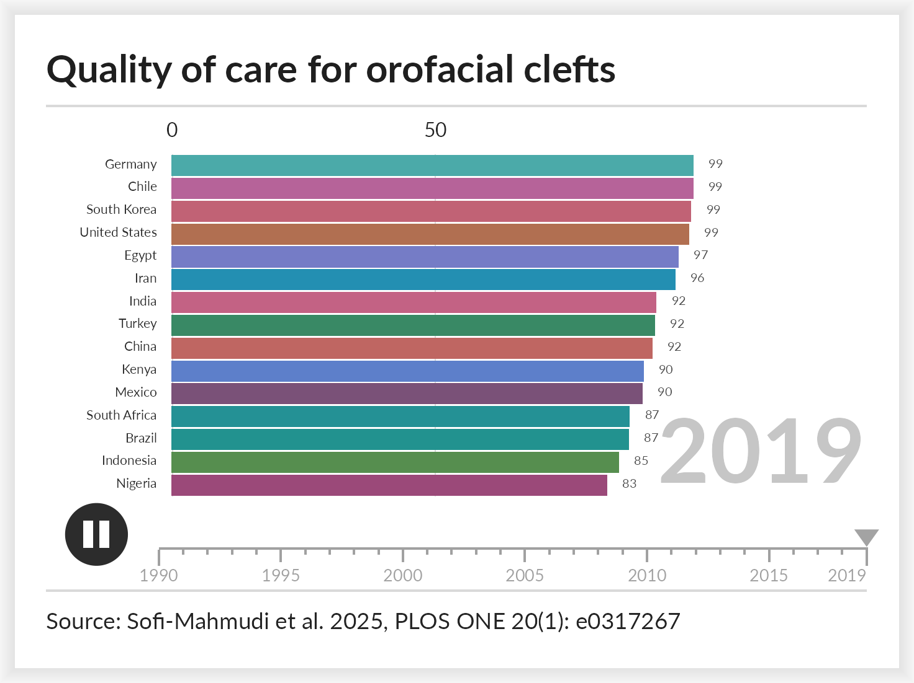
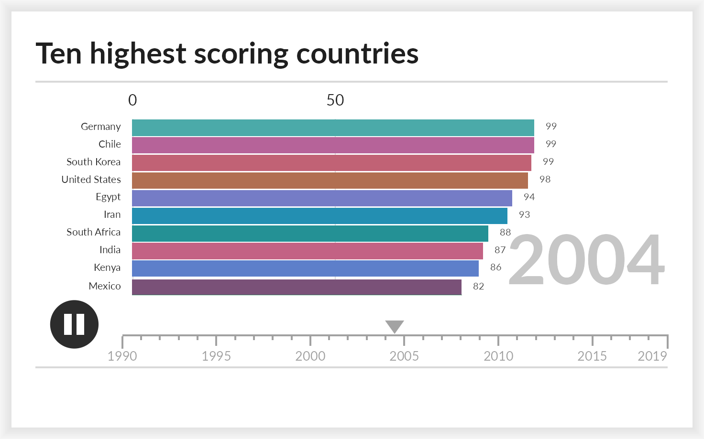
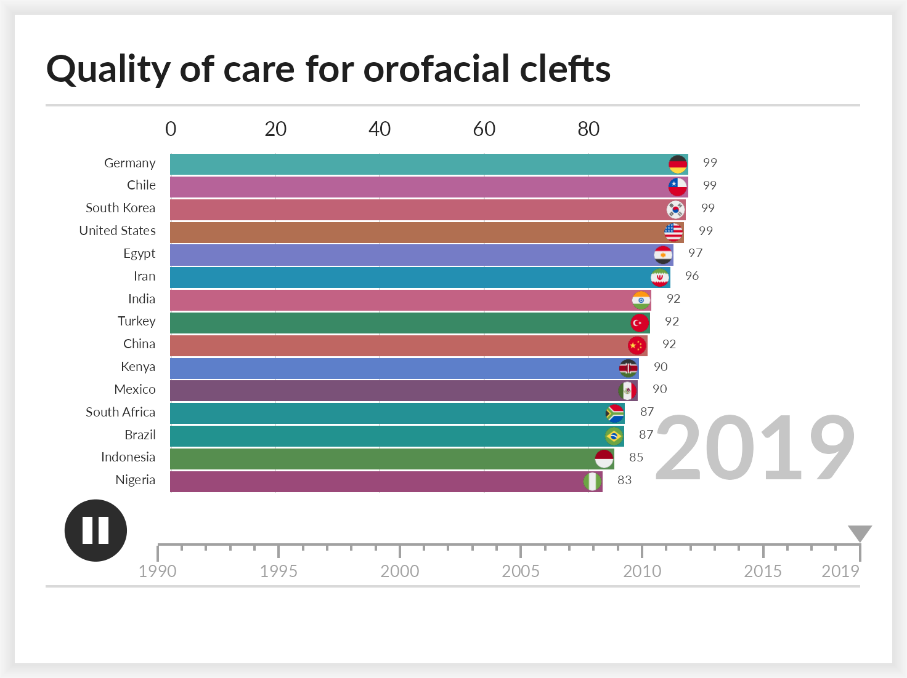

A bar chart race shows how a ranking changes over time. It suits panel data where the same entities are measured repeatedly and their order is the point: which countries lead, which have caught up, when a position changed hands. This vignette covers the data it expects, the arguments that shape it, and how to write the animation to a file.
The data
ggrace() takes long data with one row per entity per
time point and three bare column names: the value that sets the bar
length, the label, and the time.
head(clefts_qci)
#> country iso year qci
#> 1 Brazil br 1990 0.000000
#> 2 Brazil br 1991 2.922546
#> 3 Brazil br 1992 6.361471
#> 4 Brazil br 1993 12.062058
#> 5 Brazil br 1994 19.362466
#> 6 Brazil br 1995 29.275937clefts_qci holds the Quality of Care Index for orofacial
clefts in fifteen countries from 1990 to 2019, taken from Sofi-Mahmudi
et al. (2025). Higher is better care. Each country appears once per
year, which is what the function requires: a repeated country and year
pair is an error rather than a silent average.
race <- ggrace(
clefts_qci,
value = qci,
name = country,
time = year,
top_n = 15,
duration = 15,
title = "Quality of care for orofacial clefts",
caption = "Source: Sofi-Mahmudi et al. 2025, PLOS ONE 20(1): e0317267"
)
race
#> <ggrace>
#> entities: 15 (top 15 shown)
#> keyframes: 30
#> frames: 900 at 60 fpsThe object holds one row per entity per frame, already interpolated. Nothing has been drawn yet.
head(race$frames)
#> frame time name value rank
#> 1 1 1990 Brazil 0.00000 15
#> 2 1 1990 Chile 96.70909 2
#> 3 1 1990 China 14.52871 14
#> 4 1 1990 Egypt 90.42298 5
#> 5 1 1990 Germany 98.60005 1
#> 6 1 1990 India 80.40029 9Looking at one frame
Every frame is an ordinary ggplot object, so it can be
printed, saved with ggplot2::ggsave(), or inspected before
committing to a full render.
race_frame(race, 1)
race_frame(race, race$n_frames)
Frames are set in Lato, which the package registers when it loads.
Devices that understand registered fonts, such as
ragg::agg_png(), will use it; the older pdf()
and png() devices will not, so draw with ragg or pass
family = "" to fall back to the device default.
Writing the animation
animate_race() draws every frame and encodes them. The
encoder follows the file extension: .gif uses gifski,
falling back to magick, and anything else is treated as video and uses
av, falling back to an ffmpeg binary on the search
path.
animate_race(race, "clefts.mp4")
animate_race(race, "clefts.gif")Frames are independent, so they are drawn across cores by default.
Pass cores = 1 to force a single core, which is also what
happens on Windows.
Arguments worth knowing
| argument | effect |
|---|---|
top_n |
how many bars are visible at once |
duration, fps, end_pause
|
length in seconds, frame rate, hold on the last frame |
swap |
seconds a bar takes to move into a new rank |
palette |
a colour vector, or one named by entity |
breaks |
gridline positions, a function or a fixed vector |
label_value, label_time
|
formatters for the bar numbers and the large time label |
images |
pictures to sit at the end of the bars |
timeline, play_button,
card
|
turn off the timeline strip, the button, or the card |
width, res
|
output size; the whole layout scales with width
|
top_n smaller than the field is where a race earns its
keep. Entities outside the visible window wait just below it and slide
in when they qualify.
top10 <- ggrace(
clefts_qci, qci, country, year,
top_n = 10,
duration = 15,
title = "Ten highest scoring countries"
)
race_frame(top10, round(top10$n_frames / 2))
Images on the bars
images takes a character vector of image file paths
named by entity. Pictures are cropped to a circle and right aligned just
inside the end of the bar. Entities with no image simply get none.
The package bundles a circular flag for every ISO 3166-1 country,
plus Kurdistan, so country races need no extra files.
race_flags() maps names or codes to those paths.
key <- unique(clefts_qci[c("country", "iso")])
flags <- setNames(race_flags(key$iso), key$country)
flagged <- ggrace(
clefts_qci, qci, country, year,
top_n = 15,
duration = 15,
images = flags,
breaks = scales::breaks_extended(6),
title = "Quality of care for orofacial clefts"
)
race_frame(flagged, flagged$n_frames)
Lookup tries the two letter code, the three letter code, the full country name, then a unique partial match. The names follow the World Bank style, so a few common spellings do not match and the code is the reliable key.
subset(race_flag_codes(), grepl("Korea|Turk", country))
#> code code3 country
#> 117 kp prk Korea, Dem. People's Rep.
#> 118 kr kor Korea, Rep.
#> 208 tc tca Turks and Caicos Islands
#> 216 tm tkm Turkmenistan
#> 219 tr tur TurkiyeAny image works, not only flags: pass paths to logos, portraits or team crests in the same way.